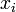
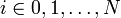
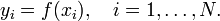
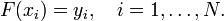
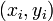
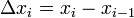

»нтерполирование функции
»нтерпол€ци€ - в вычислительной математике способ нахождени€ промежуточных значений величины по имеющемус€ дискретному набору известных значений.
–ассмотрим систему несовпадающих точек ,  из некоторой области
D.
ѕусть значени€ функции
f известны только в точках . «адача интерпол€ции состоит в поиске такой функции
F из заданного класса функций, что .
“очки называют узлами интерпол€ции, а их совокупность Ч интерпол€ционной сеткой
ѕары  называют точками данных или базовыми точками.
–азность между Ђсоседнимиї значени€ми  Ч шагом интерпол€ционной сетки. ќн может быть как переменным так и посто€нным.
‘ункцию F(x) Ч интерполирующей функцией